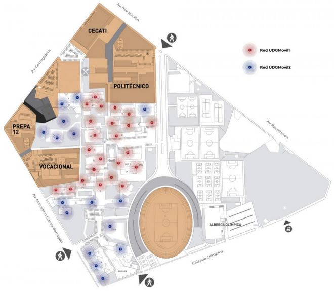
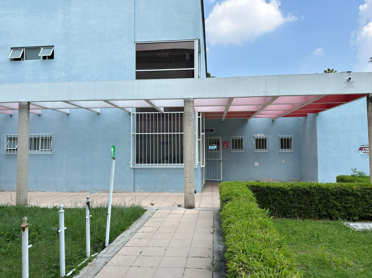
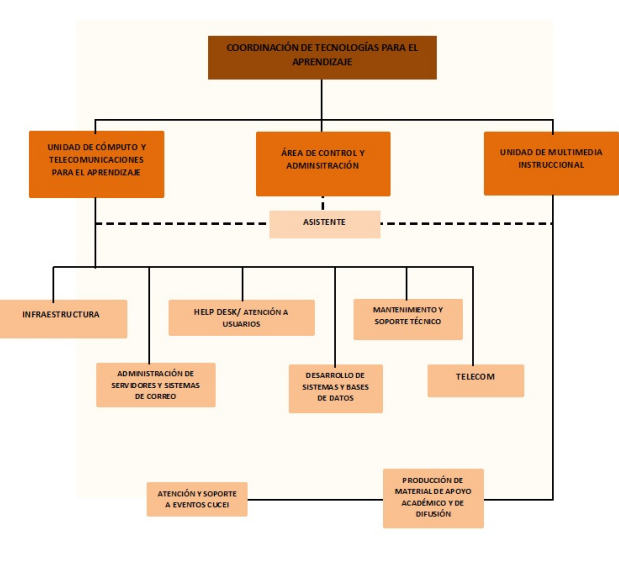

¿Qué es?
La Coordinación de Tecnologías para el Aprendizaje (CTA) es la encargada de administrar, controlar y realizar todas las actividades que estén relacionadas con los sistemas tecnológicos para apoyar la enseñanza en este centro universitario, así como para todas aquellas herramientas tecnológicas que apoyen a los administrativos y académicos en la realización de sus labores.
Misión
La misión consiste en proveer, administrar y mantener tecnologías de información y comunicación que respalden las actividades fundamentales de la comunidad de CUCEI (docencia, investigación, extensión, internacionalización, gestión y gobierno institucional). Este propósito se alcanza mediante la entrega de una amplia gama de servicios tecnológicos eficientes e innovadores, garantizando la satisfacción de los usuarios y sus necesidades a través de la calidad, el compromiso de nuestro personal y la eficacia en los tiempos de respuesta.
Visión
Ser una institución reconocida por su liderazgo en la mejora de los procesos de aprendizaje dentro de la comunidad universitaria de CUCEI. Aspiramos a ser un referente en la eficiente aplicación y uso de tecnologías de información y comunicación, gracias a la calidad de nuestros productos y servicios. Estos son implementados por un equipo entusiasta, con alta capacidad técnica, arraigado en valores éticos, responsabilidad y compromiso institucional.
Valores
Para lograr su misión y visión la CTA basa su compromiso de trabajo en:
Ubicación
Entre los modulos Alfa y Beta en el costado del jardín se encuentra la Coordinación de Tecnologías para el Aprendizaje de CUCEI.


Organigrama

Servicios
Los principales servicios que provee CTA son:
Internet
El CUCEI se esfuerza por fortalecer una red de servicios relacionados con las nuevas tecnologías de la información y la comunicación (TIC), dada su relevancia. Entre estos servicios, el internet inalámbrico destaca como uno de los más importantes, disponible en la mayoría de espacios dentro del campus. Sin embargo, debido a la distribución de edificios, instalaciones y usuarios, se observa una variabilidad en la calidad de la recepción en distintas zonas.
Red UDG Movil
Es el servicio de conexión inalámbrica que ofrece la Universidad de Guadalajara. Tiene como objetivo brindar acceso a internet en cualquier área donde exista cobertura, independientemente del centro universitario o escuela a la que pertenezcas.
MOODLE2 CUCEI
Como apoyo a los procesos de enseñanza aprendizaje, un número importante de profesores utilizan Moodle. Por sus características, Moodle propicia el aprendizaje colaborativo, el intercambio de información y resulta un complemento idóneo para la actividad docente. La CTA también coordina y ofrece los servicios relacionados con el correo electrónico institucional, soporte técnico a los equipos de computo, realización de videoconferencias, capacitación a usuarios y telecomunicaciones en general.